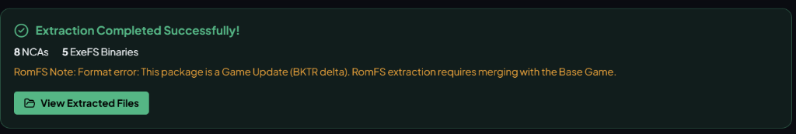

An open-source, hardware-accelerated desktop utility to inspect, decrypt, and extract .nsp, .nsz, .xci, .xcz, and .nca containers with on-the-fly BKTR delta update merging and structured DLC unpacking.

AES-NI hardware-accelerated AES-128-XTS header decryption and AES-128-CTR sector streaming for maximum multi-gigabyte throughput.
Seamlessly merges Game Updates with Base Game packages on-the-fly. Relocation bucket trees decrypt and layer patch blocks without modifying source files.
Simultaneously select Base Game, Game Update, and multiple DLC packages. DLC contents extract into organized, isolated RomFS trees.
Queries GitHub Releases API, shows changelogs with live MB/s download progress, and atomically swaps the running executable on Windows without locking.
Full support for .NSP (PFS0), .NSZ (Zstandard), .XCI (HFS0 GameCards), .XCZ, and standalone .NCA archives.
Automatically discovers and parses prod.keys and title.keys from Yuzu and Ryujinx system directories, or custom key paths.
Unlike legacy Python scripts or memory-heavy Electron wrappers, Switch Extractor is built with a pure Rust cryptographic engine (`switch-extractor-core`) and Tauri v2. All decryption, relocation mapping, and file unpackers execute on Tokio worker threads with zero UI freezing.
| Metric | Switch Extractor Desktop | Typical Electron App | Legacy Python CLI/Tkinter |
|---|---|---|---|
| Distribution | 1 Standalone .exe (6.95 MB) | Installer / 150+ MB bundle | Requires Python & pip packages |
| Cold Launch | < 0.5 seconds | 3 – 6 seconds | 2 – 4 seconds |
| Idle RAM | ~42 MB | 200 – 450 MB | ~80 MB |
| Console Window | None (Clean WinExe) | None | Black CMD prompt window |
| BKTR Patching | Native Rust on-the-fly | External tool bridge | External hacks |